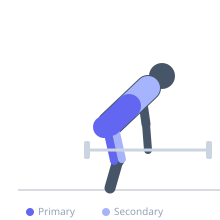

Exercise guide / Zercher Deadlift from Floor
Zercher Deadlift from Floor
The Zercher deadlift is a variation in which the barbell is lifted from the floor using the crooks of the elbows (antecubital fossa) rather than the hands. The lifter squats down, positions the elbows under and around the bar, then stands up with the bar cradled in the bent arms. This unusual loading position places the barbell closer to the body's center of mass than a conventional deadlift and dramatically increases core and upper back demands. It is a full-body strength exercise that is particularly useful for athletes who need to train the hip and knee extension pattern with strong anterior core bracing.
Primary muscles
gluteus maximus
biceps femoris long head
erector spinae
Secondary muscles
rectus femoris
rectus abdominis
trapezius upper
Stabilizers
transverse abdominis
triceps long head
Equipment
Standard Barbell


Starting position
- The barbell is set on the floor. The lifter squats down and positions the arms under the bar so it rests in the crooks of both elbows (antecubital fossa). The hands may clasp together in front.
Setup
- Begin with a very light barbell — the elbow contact is uncomfortable with heavy loads. Use straps or padding around the bar to protect the inner elbows initially.
Steps
- Step 1: Position the barbell in the crooks of both elbows, squatting down to reach it. Clasp the hands together.
- Step 2: Take a deep breath, brace the core hard, and begin the pull by driving through the feet.
- Step 3: Keep the barbell close to the body as it rises. The elbows pull upward and inward.
- Step 4: Stand to full hip and knee extension. Lower the bar back to the floor under control.
Coaching cues
- Keep the elbows high — imagine pulling the elbows toward each other under the bar
- Drive the floor away — feel the leg drive as much as the hip hinge
- Brace hard — the core demand in a Zercher is significantly higher than a conventional deadlift
Breathing
- Inhale and brace before the pull. Exhale at the top or in a controlled manner during the descent.
Range of motion
- Full deadlift range — floor to full standing extension.
Tempo
- 2s pull, 1s lockout, 3s eccentric lower
Common mistakes
- Rounding the upper back — the elbows must stay high throughout
- Letting the bar swing away from the body
- Using too much weight before the elbow contact is tolerated — progress load gradually
Safety
- The inner elbow contact can be uncomfortable or cause bruising with heavy loads — use bar padding initially
- Avoid if elbow or wrist injuries are present
Training
- strength: 3–6 reps
- endurance: 5–10 reps
- strength: 3–4 sets
- endurance: 2–3 sets
- Rest: {'strength': 180, 'endurance': 90}